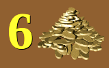
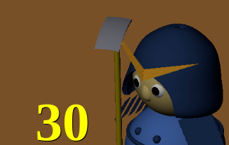
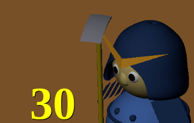

SamurAI Dig Here ページは SamurAI Dig Here ゲームを HTML ブラウザで試してみるためのページです．
下図はページの表示画面例です.
競技場は格子状に並んだセルに分けられています.
両軍にそれぞれ侍と犬, 合計4エージェントがあり, 初期状態では競技場の四隅に配置されています. 侍は各ステップでその位置の四近傍のセルのどれかに, 犬は八近傍セルのどれかに動けます.

初期状態では, 競技場のセルのいくつかに穴が空いています. 穴があるセルには行けません. 穴はランダムに配置されます.
侍は四近傍のどれかのセルに穴があるとき, その穴を埋めることができます. 犬には穴埋めができません.

ランダムに選んだセルのいくつかには埋蔵金が隠されています.
左上部にある再設定ボタン
 をクリックすることで,
ゲームをランダムに再設定することができます.
をクリックすることで,
ゲームをランダムに再設定することができます.
プレイモードの初期状態は自動になっています. 自動モードではコンピュータが各ステップのエージェントの動作を選びます.

ゲームの進行は画面上部のいくつかのボタンを用いて行います. ボタンとその昨日は以下のとおりです.
手動プレイモードでは片方の侍を手動で制御できます.
右上部にある手動プレイボタン
 をクリックすると手動プレイモードになります.
をクリックすると手動プレイモードになります.
最初のクリックで赤の侍が手動制御になり,
ボタンの色は赤
 .
になります.
他のエージェント, つまり犬や青の侍はコンピュータが制御します.
.
になります.
他のエージェント, つまり犬や青の侍はコンピュータが制御します.
もう一度クリックすると青の侍が手動制御になり,
ボタンの色は青
 .
になります.
赤の侍や犬の制御はコンピュータがすることになります.
.
になります.
赤の侍や犬の制御はコンピュータがすることになります.
さらにもう一度クリックすると, 自動プレイモードに戻り, ボタンの色も元の色に戻ります.

手動実行では, 制御対象の侍の周囲のセルに可能な動きを示す矢印が表示されます. 穴があるセルの上の矢印は赤い輪郭を表示します. 矢印のあるセルをクリックすることで, 以下を指示します.
侍の動作はキーボードのキーを押すことによっても支持できます. キーとその意味は以下のとおりです.
手動ステップ実行をすると, それより先のステップまで実行したことがあってもそれは捨てられ, 手動ステップ実行の結果状態が早送りボタンで表示する最も進行した状態になります.
手動プレイモードでも, ステップ実行ボタン
 での1ステップ自動実行, プレイボタン
での1ステップ自動実行, プレイボタン
 での連続自動実行, 巻き戻しボタン
での連続自動実行, 巻き戻しボタン
 での状態初期化は可能です.
手動プレイモードはそのままになります.
での状態初期化は可能です.
手動プレイモードはそのままになります.
ゲーム状態の情報も画面に表示されます.
上部右の時計アイコンの横に現在のステップ番号と最大ステップ数を表示します.

まだ掘り出されていない埋蔵金の総量
(秘匿されているものと公開されているものの合計)
が埋蔵金ボタン
 .
の横に表示されています.
埋蔵金ボタンの上でマウスボタンで押し下げている間,
隠された埋蔵金の位置と量を表示できます.

.
の横に表示されています.
埋蔵金ボタンの上でマウスボタンで押し下げている間,
隠された埋蔵金の位置と量を表示できます.

画面の下部に両軍の得点 (それまでに掘り出した埋蔵金のユニット数) を表示します.